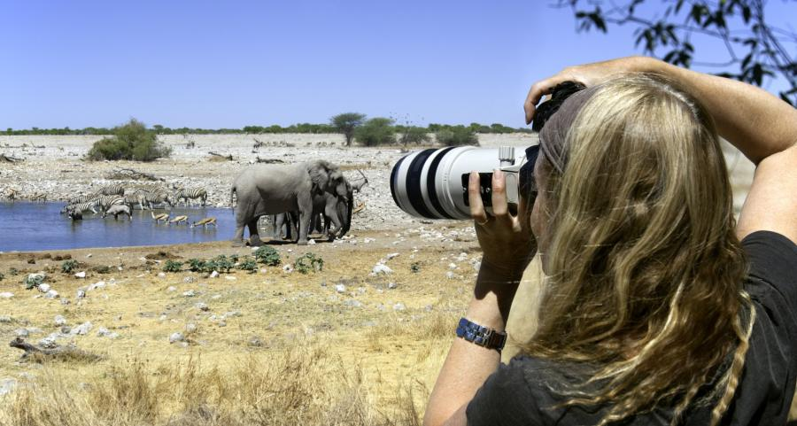

Research on mimicry in butterflies provides one example
By Jeff Grabmeier
Imageomics, a new field of science, has made stunning progress in the past year and is on the verge of major discoveries about life on Earth, according to one of the founders of the discipline.
Tanya Berger-Wolf, faculty director of the Translational Data Analytics Institute at The Ohio State University, outlined the state of imageomics in a presentation on Feb. 17, 2024, at the annual meeting of the American Association for the Advancement of Science.
“Imageomics is coming of age and is ready for its first major discoveries,” Berger-Wolf said in an interview before the meeting.
Imageomics is a new interdisciplinary scientific field focused on using machine learning tools to understand the biology of organisms, particularly biological traits, from images.
Those images can come from camera traps, satellites, drones – even the vacation photos that tourists take of animals like zebras and whales, said Berger-Wolf, who is director of the Imageomics Institute at Ohio State, funded by the National Science Foundation.
These images contain a wealth of information that scientists couldn’t properly analyze and use before the development of artificial intelligence and machine learning.
The field is new – the Imageomics Institute was just founded in 2021 – but big things are happening, Berger-Wolf told AAAS.
Read the full article on Ohio State News